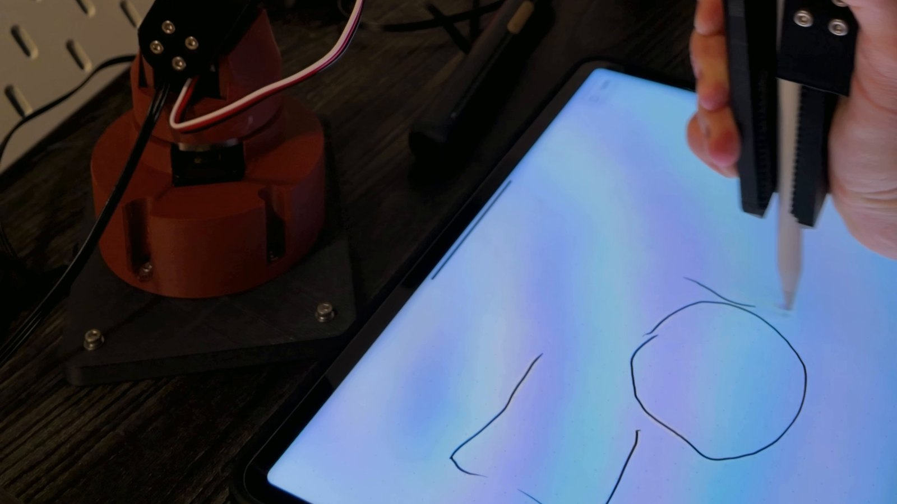
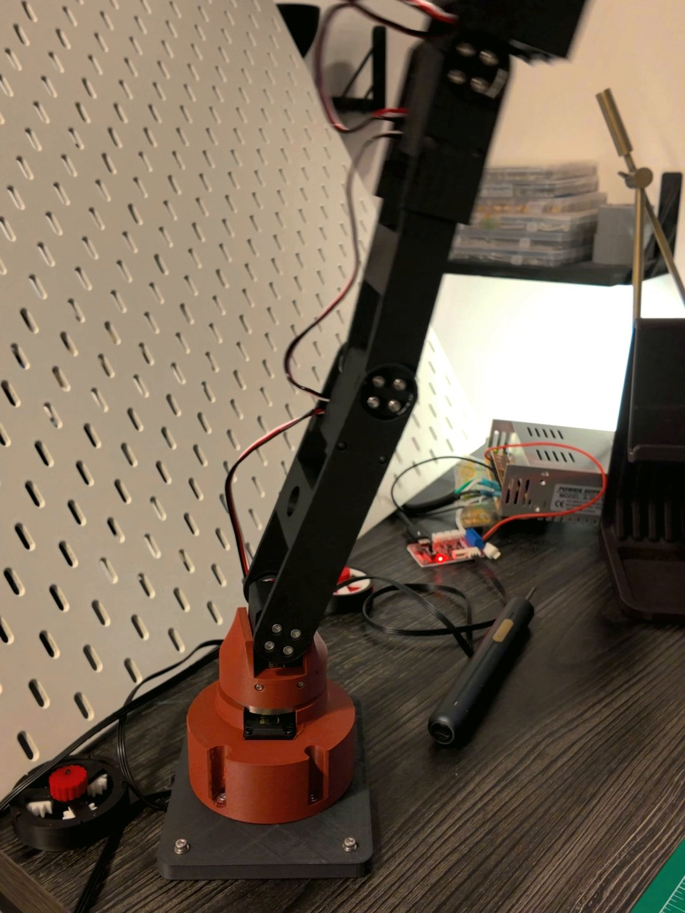
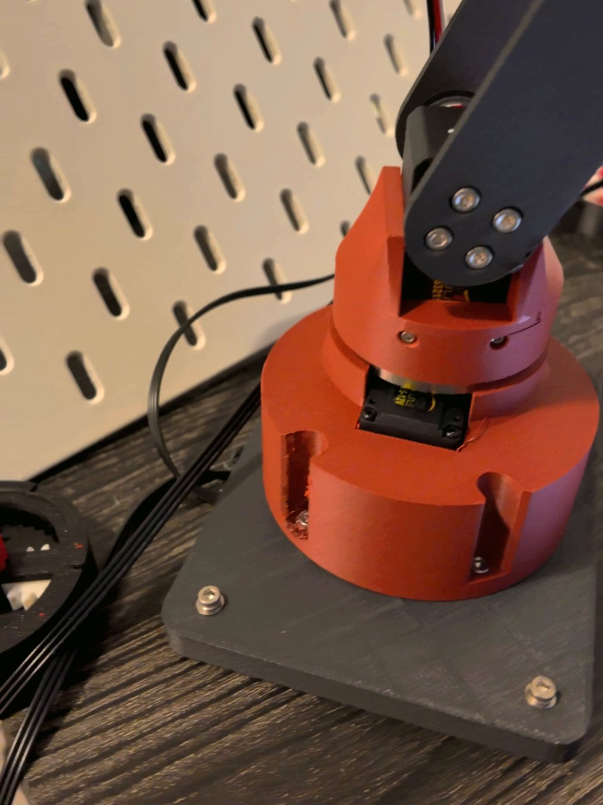

Bitzy Lite
A Light Robot Arm
You Teach by Hand
A lighter follow-up to Bitzy V1: five axes and a gripper on six Feetech STS3215 serial-bus servos, with printed links and a PETG-CF base plate. On October 26, 2026 I guided it through a drawing by hand, cleared the screen, and it drew the same thing again on its own.

Frame from the recorded clip; no quantitative claim.
Show it once. It does it again.
Actual hardware. Playback is manual and silent.
Teaching is programming by demonstration. The servos are switched to a limp mode so the arm can be moved freely by hand, while the control program reads every joint's position from the servo bus and records the motion with its timing. To repeat it, the program sends the recorded joint positions back to the servos.
The drawing is a demanding first test because any timing or position error shows up as a wobbly line. Stretches that I moved faster than the servos can follow are replayed more slowly, and the program refines its per-joint timing from repeated replays.
What the demo does and does not show.
It shows the full loop working on the real arm: hand-guided recording, a cleared screen and an unassisted redraw of the same figure. Replay accuracy, repeatability, payload and speed are not yet characterised, so no numbers are claimed here.
Lighter, and it feels its own joints.
Bitzy V1 is my first built arm: five axes, a paired shoulder, ESP32 control and interchangeable tools. Bitzy Lite is the lighter follow-up, built around one change: every joint uses a Feetech STS3215 serial-bus servo.
Bus servos share one daisy-chained cable and report their own position, temperature and load back to the controller. That feedback is what makes teaching by hand possible: the arm can go limp, be moved, and still know exactly where every joint is.
What changed from Bitzy V1.
One servo type at every joint, all on one bus. Joint positions are read back, not assumed. Control runs from a PC program over a USB bus adapter, with a browser page that shows the arm in 3D.
AI-assisted workflows supported the creation of this project. The control software is closely guided AI-generated code: my Python work is carried out entirely through AI-assisted workflows using Claude Code and Codex.
Printed links on bus servos.
Each STS3215 sits in a printed pocket, and the black printed links bolt to the servo horns through round four-bolt flanges. A printed turret carries the shoulder above a square PETG-CF base plate screwed down at its four corners.
The arm is a parametric Fusion 360 model with five axes and a gripper: base yaw, shoulder, elbow, wrist pitch, wrist roll and a pivoting jaw. Six servos on one 12 V bus, IDs 1 to 6, each with a 4096-count magnetic position sensor.
As designed, not measured.
The link lengths and reach below come from the CAD model. Payload, stiffness and accuracy of the built arm have not been tested.




Axes
5 + gripper
Yaw, shoulder, elbow, wrist pitch, wrist roll
Actuators
6 × Feetech STS3215
12 V serial bus, IDs 1–6
Links (CAD)
130 / 130 / 153 mm
Shoulder to elbow, elbow to wrist, wrist to grip point
Reach (CAD)
413 mm
Base axis to grip point, arm straight
Structure
Printed links and turret
Square PETG-CF base plate
Control
PC program + browser page
USB bus adapter; Python (AI-assisted workflows only)
Assembled in an evening, tuned on the arm.
October 19, 2026: printed parts, heat-set inserts, servos and links assembled into the first full arm. October 20: first connection from the control program and calibration on the real servos. By October 21: the gripper servo fitted and its travel calibrated. October 26: the first teach-and-repeat drawing.
Bring-up on the real arm found problems that a simulation would not, each traced with short tests on the arm at reduced torque.
- The servo's built-in zero offset was unsafeShifting a joint's zero in the servo moved its reported position but not where its controller wraps around, so joints could run away when switched on to hold position. Calibration now clears the servo's offset and applies the zero in software instead.
- One joint crept away from its targetTests pinned it to the base joint's cable, not the servo. A new cable fixed it.
- Joints running away after power-upThe servo firmware counts full turns since power-up. The base and wrist-roll joints now run in multi-turn mode with turns counted in software, which also gave the base joint its full range.
Working, and not finished.
Bitzy Lite is built and repeats a hand-taught drawing. It is still in progress. Next is a second, hand-held leader arm to teach it by mirroring, cycloidal gearboxes in the joints building on Cycloid R1, and camera-guided picking.
- DoneArm printed and assembled; calibration and control on the real servos; hand-guided teaching and unassisted replay of a drawing.
- Next (planned, not built)Leader arm for teaching by mirroring; cycloidal gearbox joints; camera-guided picking.
- Not measuredReplay accuracy, repeatability, payload, speed and lifetime.